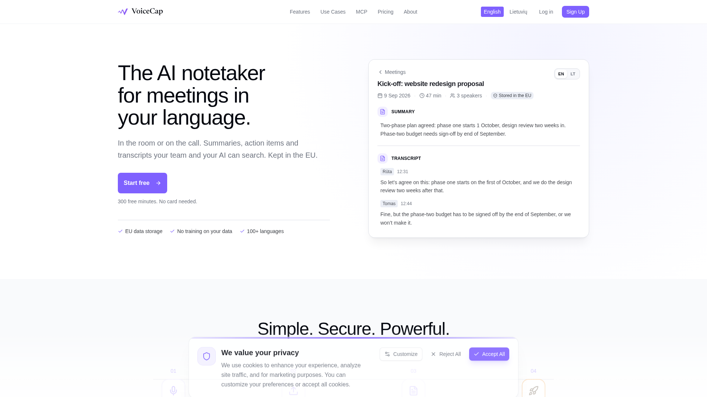
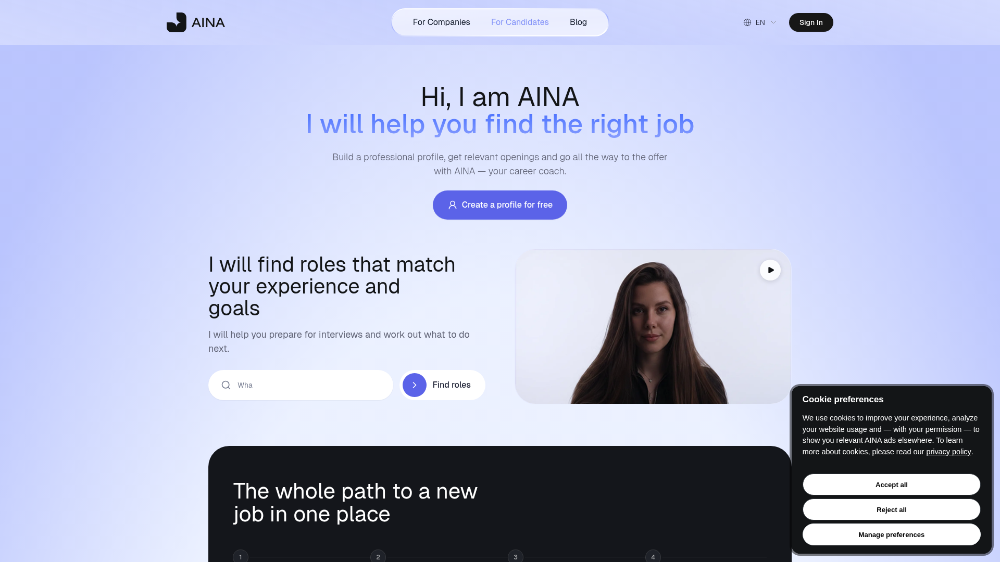
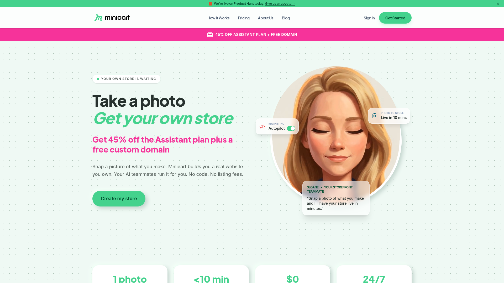
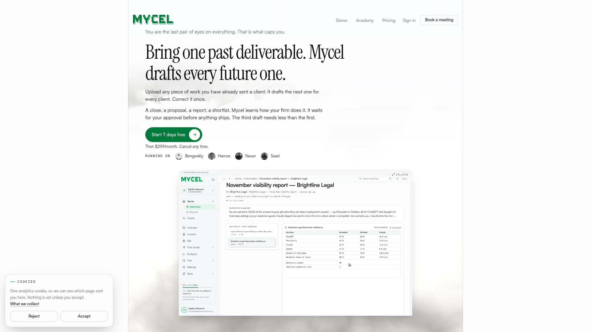

9月21日 周一

VoiceCap
支持100多种语言的AI会议笔记工具，自动加入Zoom、Meet、Teams和Webex会议，生成带说话人识别的转录稿、摘要和行动项。所有数据存储在欧盟境内，绝不用于模型训练，还支持通过MCP与Claude/ChatGPT对接查询会议档案。

AINA 职业教练
一款用逼真视频化身进行对话的AI职业教练。你可以和它谈论职业困惑、模拟面试练习，它会指出你表达中的盲点——比如是否在低估自己的贡献、回答是否过于笼统——并给出具体的改进措辞和行动方案。
Mercury Pitch 虚拟练声室
一个完全在浏览器中运行的虚拟练声和乐器练习工作室。实时检测你的音高并可视化显示，支持卡拉OK模式、音域测试、多人在线Jam房间，以及吉他/钢琴/鼓等乐器练习。所有音频处理在本地完成，不上传服务器，保护隐私。

Minicart
用聊天就能开的AI电商店铺。描述你卖什么，5分钟内店铺上线。之后由AI团队24/7管理运营——从商品上架、社交媒体发帖、广告投放、物流库存到客服回复，全部通过自然语言指令完成。

Mycel 交付助手
面向服务型企业的AI交付自动化平台。上传一份过往交付文件，Mycel就能学会你公司的工作风格，自动起草客户报告、提案、对账单等所有后续交付物。每份产出都经过人工审批才能发出，AI还会从你的修改中持续学习，越用越准。